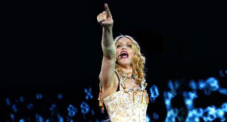

| November 2005 |

Hør Madonnas nye plade først i Studenterhuset med Panbladet og Warner Music søndag d. 13.11.
Den er en velbevaret hemmelighed men nu er nedtællingen endelig i fuld gang. D. 14. november bliver Madonnas nye plade 'Confessions on a Dancefloor' endelig givet fri.
Et af de steder du kan høre og få fat i Madonnas bekendelser er i Studenterhuset i Købmagergade i København, hvor Warner Music, TP Musik og Panbladet frigviver 'Confessions on a Dancefloor' klokken 00.01. d. 14.11.
I stedet for at stå i forventningsfuld kø på gaden til midnat inviterer vi dig om aftenen søndag d. 13.11. inden for i Studenterhuset fra klokken 20.00
Her kan du slappe af med dj's som Nikolaj Tange Lange og Lef spille Madonnaplader og kloninger af damen - i coverversioner, samplinger og bootlegs.
Ekstern lektor ved Kultur- og Sprogmødestudier på Roskilde Universitet og Madonnafan Rasmus Præstmann Hansen vil fortælle om Madonnas bekendelser om køn, seksualitet og etnicitet. Den amerikanske sangerinde er nemlig meget mere end en hitmagerske. Hun sætter standarder i populærkulturen.
Og så ved midnat går det hele så løs med den nye plade.
MADONNA/Relax and release.
Studenterhuset, Købmagergade ved Rundetårn i København
Søndag d. 13.11 fra kl. 20.00
Release af 'Confessions on a Dancefloor' kl 00.01.
TP Musik sælger pladen på stedet.
www.madonna.com
http://www.panbladet.dk/artikel/390
Print denne side